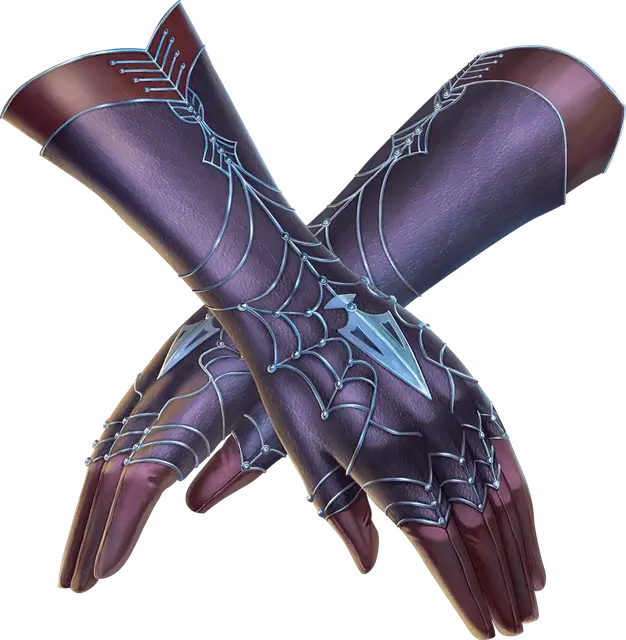

Перчатки ловли снарядов
Gloves of Missile Snaring
Чудесный предмет, необычный (требуется настройка)

Рекомендованная стоимость 400 зм
Пока вы носите эти перчатки, если по вам попадает бросок атаки Дальнобойным или Метательным оружием, и у вас есть свободная рука, вы можете Реакцией уменьшить получаемый урон на число, равное 1к10 плюс ваш модификатор Ловкости. Если таким образом вы уменьшите урон до 0, вы можете поймать попавшие по вам боеприпас или оружие в руку, если этот объект достаточно мал, чтобы вы могли держать его в этой руке.